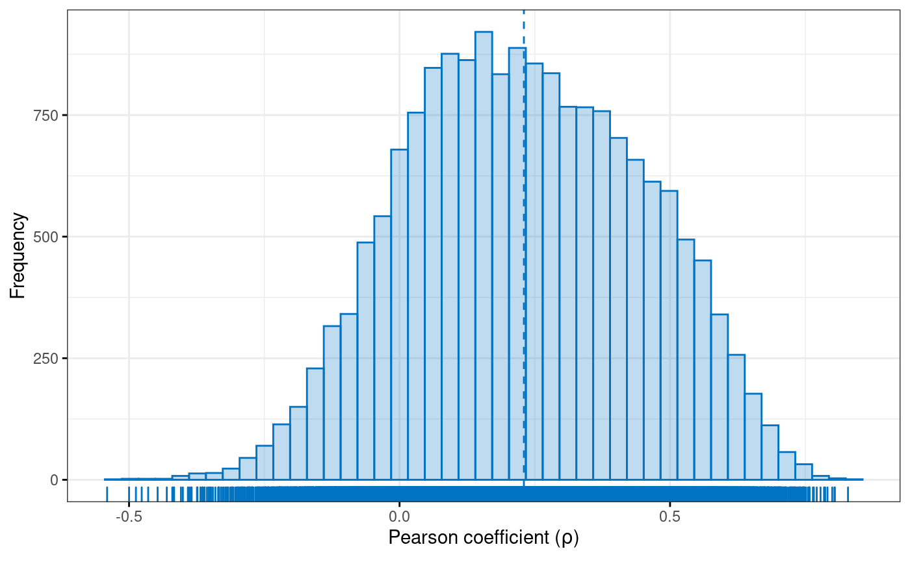
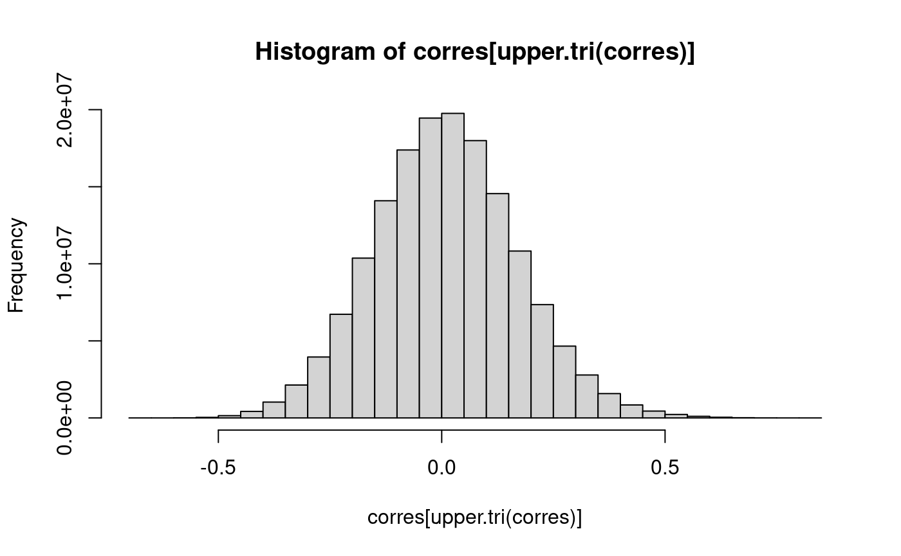
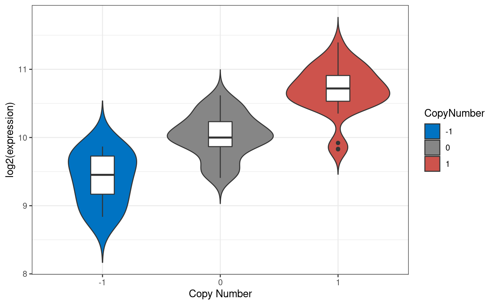

vignettes/Figures5-6-S4.Rmd
Figures5-6-S4.RmdLoad packages:
library(MultiAssayExperiment)
library(curatedTCGAData)
library(RColorBrewer)
library(TCGAutils)
library(survival)
library(ggplot2)
library(ggpubr)acc <- curatedTCGAData("ACC", c("RNASeq2GeneNorm", "GISTIC_T*"), FALSE)wideacc <- wideFormat(acc["EZH2", , ],
colDataCols=c("vital_status", "days_to_death", "pathology_N_stage"))
wideacc[["y"]] <- Surv(wideacc$days_to_death, wideacc$vital_status)
wideacc## DataFrame with 92 rows and 7 columns
## primary vital_status days_to_death pathology_N_stage
## <character> <integer> <integer> <character>
## 1 TCGA-OR-A5J1 1 1355 n0
## 2 TCGA-OR-A5J2 1 1677 n0
## 3 TCGA-OR-A5J3 0 NA n0
## 4 TCGA-OR-A5J4 1 423 n1
## 5 TCGA-OR-A5J5 1 365 n0
## ... ... ... ... ...
## 88 TCGA-PK-A5H9 0 NA n0
## 89 TCGA-PK-A5HA 0 NA n0
## 90 TCGA-PK-A5HB 0 NA NA
## 91 TCGA-PK-A5HC 0 NA n0
## 92 TCGA-P6-A5OG 1 383 n0
## ACC_GISTIC_ThresholdedByGene.20160128_EZH2
## <numeric>
## 1 0
## 2 1
## 3 1
## 4 -2
## 5 1
## ... ...
## 88 0
## 89 0
## 90 0
## 91 1
## 92 0
## ACC_RNASeq2GeneNorm.20160128_EZH2 y
## <numeric> <Surv>
## 1 75.8886 1355:1
## 2 326.5332 1677:1
## 3 190.194 NA:0
## 4 NA 423:1
## 5 366.3826 365:1
## ... ... ...
## 88 47.806 NA:0
## 89 118.5226 NA:0
## 90 390.1363 NA:0
## 91 NA NA:0
## 92 684.8721 383:1coxph(
Surv(days_to_death, vital_status) ~ `ACC_GISTIC_ThresholdedByGene.20160128_EZH2` +
log2(`ACC_RNASeq2GeneNorm.20160128_EZH2`) + pathology_N_stage,
data=wideacc
)## Call:
## coxph(formula = Surv(days_to_death, vital_status) ~ ACC_GISTIC_ThresholdedByGene.20160128_EZH2 +
## log2(ACC_RNASeq2GeneNorm.20160128_EZH2) + pathology_N_stage,
## data = wideacc)
##
## coef exp(coef) se(coef) z
## ACC_GISTIC_ThresholdedByGene.20160128_EZH2 -0.03723 0.96345 0.28205 -0.132
## log2(ACC_RNASeq2GeneNorm.20160128_EZH2) 0.97731 2.65729 0.28105 3.477
## pathology_N_stagen1 0.37749 1.45862 0.56992 0.662
## p
## ACC_GISTIC_ThresholdedByGene.20160128_EZH2 0.894986
## log2(ACC_RNASeq2GeneNorm.20160128_EZH2) 0.000506
## pathology_N_stagen1 0.507743
##
## Likelihood ratio test=16.28 on 3 df, p=0.0009942
## n= 26, number of events= 26
## (66 observations deleted due to missingness)subacc <- intersectColumns(acc)
subacc <- intersectRows(subacc)Create a list of numeric matrices:
Log-transform the RNA-seq assay:
acc.mats[["ACC_RNASeq2GeneNorm-20160128"]] <-
log2(acc.mats[["ACC_RNASeq2GeneNorm-20160128"]] + 1)Transpose both, so genes are in columns:
subacc.list <- lapply(acc.mats, t)Calculate the correlation between columns in the first matrix and columns in the second matrix:
corres <- cor(subacc.list[[1]], subacc.list[[2]])## Warning in cor(subacc.list[[1]], subacc.list[[2]]): the standard deviation is
## zeroAnd finally, create the histogram:
Histogram of the distribution of Pearson correlation coefficients between RNA-Seq and copy number alteration in adrenocortical carcinoma (ACC). An integrative representaiton readily allows comparison and correlation of multi-omics experiments.
diagvals <- diag(corres)
diagframe <- data.frame(genename = names(diagvals), value = diagvals)
jco <- get_palette(palette = "jco", 1)
gghistogram(diagframe, x = "value", color = jco, fill = jco, ylab = "Frequency",
xlab = expression(paste("Pearson coefficient (", rho, ")")), alpha = 0.25,
ggtheme = theme_bw(), rug = TRUE, bins = 45, add = "mean")
Code for saving as PDF:
# png("F5_rnaseq-cn-correl_ggpubr.png", width = 8, height = 6, units = "in",
# res = 300)
pdf("F5_rnaseq-cn-correl_ggpubr.pdf", width = 8, height = 6, paper = "special")
gghistogram(diagframe, x = "value", color = jco, fill = jco, ylab = "Frequency",
xlab = expression(paste("Pearson coefficient (", rho, ")")), alpha = 0.25,
ggtheme = theme_bw(), rug = TRUE, bins = 45, add = "mean")
dev.off()
Log 2 expression values by copy number alteration for the highly correlated SNRPB2 gene in adrenocortical carcinoma tumors. Violin plots show differences in expression by copy number loss or gain of SNRPB2, the gene with the highest corration of expression to copy number values (0.83). Copy number increases as log 2 expression values also increase.
## SNRPB2 NAA20 CRNKL1 BAG5 POLR2C UBOX5
## 0.8289331 0.8046060 0.8038552 0.7997314 0.7910225 0.7866916The ‘SNRPB2’ gene expression has a correlation to CNV = 0.83
snr <- subacc[names(topvals)[1L], ]snpexp <- as.data.frame(wideFormat(snr, check.names = FALSE))
names(snpexp) <- c("primary", "CopyNumber", "Expression")
## remove outlier in CN
table(snpexp$CopyNumber)##
## -2 -1 0 1
## 1 9 29 38snpexp <- snpexp[snpexp$CopyNumber != -2, ]
snpexp[["Log2Exp"]] <- log(snpexp[["Expression"]], 2)
snpexp$CopyNumber <- factor(snpexp$CopyNumber)
jcols <- get_palette(palette = "jco", 4)
jcols <- jcols[c(1, 3, 4)]
ggplot(snpexp, aes(CopyNumber, Log2Exp, fill = CopyNumber)) +
geom_violin(trim = FALSE) +
xlab("Copy Number") +
ylab("log2(expression)") +
geom_boxplot(width=0.2, fill = "white") +
scale_fill_manual(values = jcols) +
theme_bw()
Code for saving as PDF:
# png("violin_exp.png", width = 8, height = 6, units = "in", res = 300)
pdf("F6_violin_exp.pdf", width = 8, height = 6, paper = "special")
ggplot(snpexp, aes(CopyNumber, Log2Exp, fill = CopyNumber)) +
geom_violin(trim = FALSE) +
xlab("Copy Number") +
ylab("log2(expression)") +
geom_boxplot(width=0.2, fill = "white") +
scale_fill_manual(values = jcols) +
theme_bw()
dev.off()